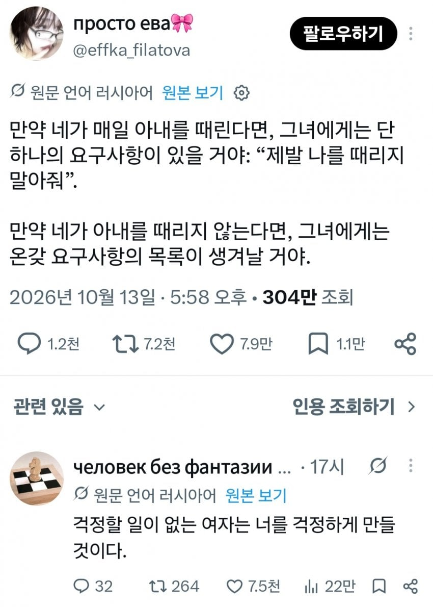

와들와들 러시아 남자들이 여자를 패는 이유.JPG
댓글
유대인 스토리인가에도 저런거 있지 않았나? 동물들의 말을 알아듣는 능력이 생긴 랍비 스토리?
천일야화 ㅎㅎ
랍비가 아니라 상인일껄 ㅋㅋ
조언한건 수탉이고 ㅋㅋ
천일야화 상인이었구만ㅋㅋ
뼈만 부러지지 않는다면 오케이
러시아 마누라 뼈....
반드시 찾아야한다 이거를..
대부분의 여자는 고양이다
ㅈ같은 짓만 골라서 하지
아! 여자는 패야되는거구나
천일야화 동물의 말을 알아듣는 남편 에피소드와 비슷하네 ㅋㅋ
마누라 존나 패니까 여자 친정가족이 빡쳐서 남편 다굴치러 몰려왔는데
안에서 요양중이던 마누라 튀어나와서 내 남편 때리지 말아욧! 하면서 끝나던가
ㄴㄴ
오히려 남편 친척들이었던가 주변 사람들이 아내가 더 고집 안부리고 문제 해결돼서 다행이라고 축하함
근데 이게 골때렸던게 남편이 동물의 말을 알아듣는거 누군가에게 말하면 죽는 제약이 있는데 아내가 어떤 말을 해도 사랑이 식었다며 안믿고 우울해져 있었음
캬
자고로 여자와북어는.. 같은 유머인가
유머인줄 알았는데 언어보고 유머가 아님을 알게됨
맞는말인거같아 한국여자 러시아로 수출하자라고 댓글달면 그녀들이 오겠지??
여자의 눈물을 믿지마라
자기가 불리하면 눈물을 흘리는 족속들이다
와 뭔 일베냐
철학자들 일베행 ㅋㅋㅋ
연애 해볼수록 무슨 말인지 알거 같음, 나에게 문제가 없어 보이면 문제를 만들어내더라
ㅅㅂㅋㅋㅋㅋㅋㅋㅋㅋㅋㅋㅋㅋㅋㅋㅋㅋㅋㅋㅋㅋ
삼일에 한번이 적절한 것 같음
인간이 원래 그렇지
생각할 시간을 주면 요구가 많아지고 복잡해짐
옛날 회사에서 주 6일 굴릴때나 군대에서 폭행하며 굴릴때는 복잡한 문제들도 안터지고 요구사항이 적었던것처럼
아 믿
옛 성현의 지혜
블랙유머네 ㅅㅂ ㅋㅋㅋ